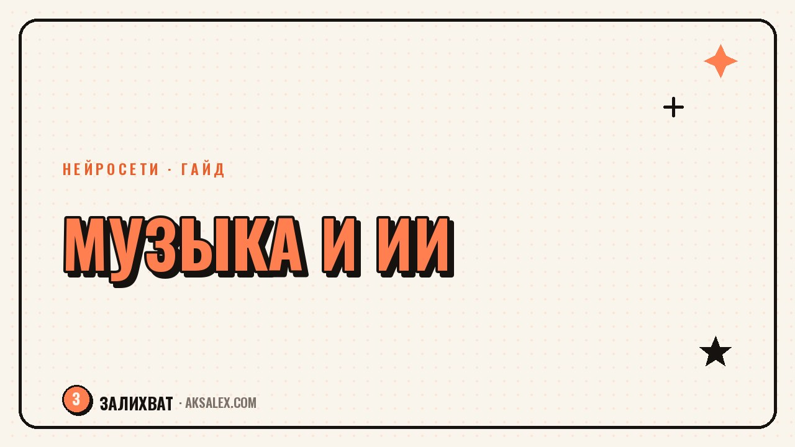

Нейросети для учителя музыки: гайд

Учитель музыки тратит на подготовку к уроку куда больше времени, чем кажется со стороны: подобрать репертуар под уровень ученика, расписать упражнения на технику, объяснить теорию простыми словами, а вечером ещё вести страницу школы в соцсетях. Нейросети не заменят слух и живое объяснение, но снимают часть этой подготовки. Разберём, где ИИ реально ускоряет работу педагога по музыке, а где лучше не экономить на собственном разборе.
Подбор репертуара и адаптация под уровень ученика
Подобрать произведение под конкретного ученика - это баланс между интересом ребёнка, его техническим уровнем и учебной программой. Нейросеть вроде ChatGPT помогает быстро набросать список кандидатов: даёшь вводные - возраст, уровень, любимый стиль, цель на полугодие - и получаешь подборку с коротким описанием сложности каждой пьесы.
Это не отменяет опыт педагога, но экономит время на первичный отбор, особенно когда в неделю проходит десять разных учеников. Из подборки преподаватель выбирает финальный вариант сам, опираясь на слух и знание ребёнка.
Что удобно просить у нейросети для репертуара
- Список произведений схожей сложности для замены, если пьеса не подошла
- Короткое описание технических задач каждого произведения
- Подборку этюдов на конкретную техническую проблему - например, скачки или трели
Теория музыки и разбор ошибок простыми словами
Объяснить ребёнку квинтовый круг или строение аккорда можно сухим академическим языком, а можно через нейросеть попросить несколько аналогий под конкретный возраст - для шестилетнего и подростка объяснение звучит по-разному. ИИ хорошо справляется с подбором таких формулировок.
Полезный приём - записать голосом короткое описание ошибки ученика и попросить нейросеть превратить это в понятную подсказку с конкретным упражнением. Так заметки после урока превращаются в готовый план для следующего занятия.
Раньше я тратила вечер на то, чтобы расписать для каждого ученика персональный план на неделю. Теперь черновик собирает нейросеть по моим заметкам после урока, а я только правлю детали - осталось больше сил на сами занятия.
Мотивация ученика и общение с родителями
Поддерживать интерес ребёнка к музыке через рутину гамм и этюдов - отдельное искусство. Нейросеть помогает придумать игровые форматы: мини-квесты по нотной грамоте, карточки для викторины по композиторам.
С родителями тоже приходится вести переписку: объяснять прогресс, договариваться о расписании. ИИ помогает собрать аккуратное сообщение из разрозненных заметок о занятии за несколько минут вместо получаса на формулировки.
Форматы, которые легко собрать с ИИ
- Викторина по композиторам и эпохам для группы учеников
- Карточки с нотной грамотой в игровой форме
- Шаблон отчёта родителям о прогрессе за месяц
Контент для соцсетей музыкальной школы
Частные педагоги и небольшие школы ведут страницы в соцсетях, чтобы находить новых учеников. Нейросеть берёт на себя текстовую часть: описание урока, анонс концерта, пост с разбором произведения - преподавателю остаётся снять видео и дать вводные для текста.
Какие сервисы выбрать: сравнение
Сравнение сервисов по задачам учителя музыки.
| Сервис | Для чего | Особенность | Цена |
|---|---|---|---|
| ChatGPT | Репертуар, объяснения теории, отчёты родителям | Хорошо подбирает аналогии под возраст ученика | Бесплатно / от 20 $ в месяц |
| Claude | Длинные планы на четверть, разбор заметок после уроков | Удобно работать с объёмными текстами | Бесплатно / от 20 $ в месяц |
| MuseScore + плагины | Набор нот и партитур | Не ИИ, но часто используется вместе с нейросетью для описаний | Бесплатно |
| Suno | Примеры аранжировок и демо для вдохновения | Не заменяет живое исполнение, только референс | Бесплатно с лимитом |
| Canva с ИИ | Карточки и афиши концертов | Готовые шаблоны под музыкальную тематику | Бесплатно / от 1000 рублей в месяц |
Чего нейросеть не умеет в музыкальном обучении
Нейросеть не слышит ученика. Она не отличит зажатую руку от правильной постановки, не услышит, что интонация на скрипке чуть выше или ниже нужной ноты - это остаётся за педагогом и его слухом.
Мотивация конкретного ребёнка складывается из мелочей, которые видит только живой учитель на уроке - настроение, усталость, реакция на похвалу. ИИ подскажет формат активности, но не заменит это наблюдение.
Частые вопросы
С чего начать учителю музыки, который не пробовал нейросети?
Начни с одной задачи - попроси ChatGPT собрать черновик отчёта родителям по твоим заметкам после урока. Результат увидишь сразу и сможешь оценить, стоит ли расширять использование.
Может ли нейросеть подобрать репертуар вместо педагога?
Она даёт список кандидатов и описание сложности, но финальный выбор под конкретного ученика и его слух всегда остаётся за учителем - только он знает ребёнка вживую.
Стоит ли доверять нейросети объяснения теории музыки для детей?
Общие аналогии и формулировки она подбирает хорошо, но за точность терминов и логику изложения отвечает сам педагог - проверяй объяснение перед тем, как давать его ученику.
Можно ли вести соцсети музыкальной школы с помощью ИИ без отдельного специалиста?
Да, для небольшой школы это реалистично: педагог снимает фото или видео с урока, а нейросеть помогает с текстами. На регулярный контент хватает часа в неделю.
Заменит ли нейросеть живое объяснение техники игры?
Нет, она не слышит и не видит постановку рук ученика в реальном времени - это работа, которую может сделать только живой педагог на занятии.
Раз тема оказалась полезной, вот что почитать следующим. Нейросети для бара: карты напитков, обучение персонала и контент. Разбор сервисов и примеры.
Читать статью →а не вручную